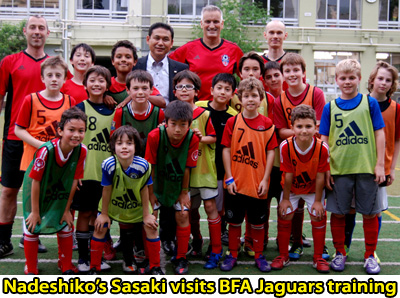

|
BFA Jaguars
• About: While the British Football Academy (BFA) is a football school, the Jaguars is a football club/team; catering to 2 different age groups: U12 and U10.
Eligible players will possess a sound knowledge of the game, its tactics and strategies as well as first-rate technical ability. All of these elements will be focused on in these elite sessions - which maximise playing time and utilise 'live game situations' as the predominant coaching tool to progress the players individually and the team(s) as a whole to the next level.
• In detail: Advanced principals of defence and attack, including but not limited to: defending from the front; defending 1v1, 2v2, 3v3 etc.; defending by applying pressure; defending as a team; counter attacking (transitional play), switching play, attacking in the final third, attacking 1v1, 2v2, 3v3 etc. finishing (accuracy, power, flair and finesse), turning, dribbling (tricks and feints), running with the ball, movement off the ball, crossing, as well as dedicated goalkeeper training will be focused on, largely WITHIN game playing situations (i.e. our FA qualified coaches will do the majority of the coaching in training sessions, during the game (realistic) situations).
• Competitions/Matches: Competitive matches will be arranged on a regular basis and match preparation and analysis will be core components of this competitive-based programme. Teams will be selected for tournaments and matches from those available inthe programme.
• Eligibility
Players will be selected from BFA members and existing Jaguars players. Selection policy follows certain guidelines so this is more exclusive set up compared to BFA. For more information about BFA Jaguars please contact us.
• OPPONENTS WANTED
We are always looking for teams to play against.
If you know of a team that would be interested, or if you are a team interested in playing against us please contact us.
|
|